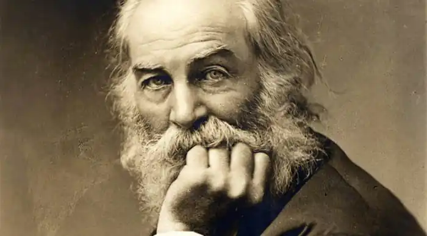
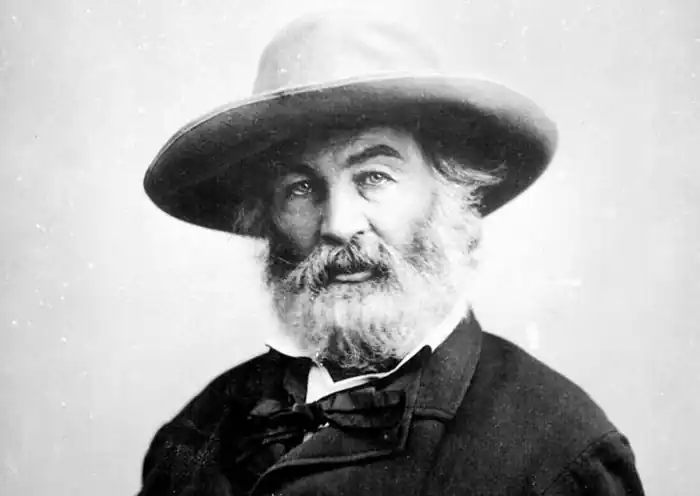
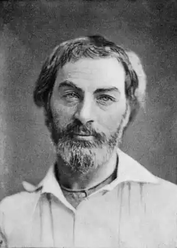

ВОЛТ ВІТМЕН
(1819-1892)
Волт Вітмен народився 31 травня 1819 року у фермерській родині у селі на Лонг-Айленді, пустельному пагорбистому острові, де повітря було просякнуте солоним диханням океану, а погляд людини охоплював два безмежжя: неба й водної стихії. "Ще хлопчиком я мріяв написати щось про морське узбережжя, про той таємничий обрій, що розділяє, об'єднує, як у шлюбному союзі, непорушне і мінливе... про велике зіткнення дійсного з ідеальним",-згадував пізніше поет. Дитинство на фермі, а потім у Брукліні, куди переїхала родина, було доброю школою. Життя простих людей — нелегке, грубе, але щедре і непідробне в його людяності й силі — він пізнав рано і полюбив назавжди. Провчившись кілька років у бруклінській школі, Вітмен полишає її і стає учнем друкаря. У цей же час він публікує свої перші вірші. У вісімнадцять юнак працює сільським учителем, секретарем у місцевому політичному дискусійному клубі. Ще рік по тому він уже редактор, а також єдиний репортер і набірник власної газети "Лонг-Айлендер". До 22 років поет "перепробував" ще цілу низку професій — політика, лектора, оратора,— і у кожній він шукав не шляху до кар'єри та заможності, а засобів утвердження і захисту своїх ідеалів. З 1846 по 1852 рік Вітмен працює в різних бруклінських газетах, де пише статті на "злобу дня", зокрема, рішуче й гнівно виступає проти грабіжницької Мексиканської війни (1846— 1848), справжньою метою якої було накопичення земель плантаторів-рабовласників. Вітмен був самоуком. Його цікавлять давні цивілізації, світ міфології і релігії, він часто відвідує нью-йоркський Єгипетський музей, багато читає з історії, етнографії, засвоюючи погляд на історичний розвиток людства як на єдиний у своїй різноманітності потік, який плине з темряви століть до сучасності — і далі у майбутнє. Відвідує він також і лекції з астрономії. Ці знання допомагають формуванню його поетичної філософії. Вітмен вчиться бачити Всесвіт безмежним у просторі й часі, що перебуває у загальному і безперервному русі. Вітмен у своїй творчості прагне показати людину в єдності матеріального і духовного, природного і соціального: Я поет Тіла, і я поет — Душі. Зі мною всі насолоди раю і всі муки пекла зі мною. Поет відчував себе в єдності з усім людством у часі і просторі: Крізь мене йде так багато голосів німотних, Голоси нескінченних поколінь в'язнів, рабів, Голоси хворих і зневірених, і злодіїв, і карликів, В усіх людях я бачу себе, не більше й ні на ячменне зернятко менше. (переклад Л. Герасимчука) У 1850 році Вітмен публікує вірш "Європа", який провістив появу видатного поета епохи. Цей вірш — реквієм загиблим революціонерам 1848 року — засвідчив тверду віру Вітмена в кінцеве всесвітнє торжество свободи. У 1855, знаменному для Вітмена році, виходить друком збірка "Листя трави" — книга, яка зробила поета всесвітньо відомим. Наступний етап у житті поета — Громадянська війна у Сполучених Штатах (1861 —1865). Працюючи санітаром у тилових шпиталях, він не раз зазнавав смертельної небезпеки, доглядаючи тифозних і холерних хворих. У ці роки написані вірші "1861 рік", "Рік озброєний, рік боротьби", "Бий, бий, барабане", "Вертайся з поля, тату", які увійшли до циклу "Під барабанний гуркіт". Вершиною творчості Вітмена цих років стала поема "Коли бузок розцвів торік у моєму дворі" (1865) — реквієм пам'яті президента Авраама Лінкольна, який загинув від руки вбивці. Поетика цього величного твору наслідує краще від романтичної традиції: космічність поетичного бачення, масштабність узагальнень, філософську насиченість символікою і музикальність. У творах поета 70-80-х років домінує соціальне і критичне начало. У 1871 році він опублікував книгу публіцистики "Демократична далечінь", де відкрито заявив про те, що "демократія Нового Світу... зазнала банкрутства". Одним із найважливіших елементів поезії пізнього Вітмена стає урбанізм. Такі вірші, як "На бруклінському паромі" — явище абсолютно нової за образністю і мовою урбаністичної лірики, яка для реалістичної поезії XX століття стає одним з найпотужніших джерел. Повоєнні роки були дуже важкими для поета. Доля завдавала йому удару за ударом: він довго .не міг знайти роботу, потерпав від злиднів, поховав матір і брата. У 1873 році Вітмена вразив параліч. Але поет не здавався. Він пройшов через усі випробування, зберігши любов до життя, до людей і віру в торжество добра і людяності. У 1891 році Вітмен створив цикл віршів "Прощай, моя фантазіє!" і тоді ж устиг прочитати коректуру й внести зміни в останнє прижиттєве видання книги "Листя трави". 26 березня 1892 року Волт Вітмен помер. Про головну працю свого життя, збірку "Листя трави", поет волів говорити не "моя книга", а "наша". Ця книга про Людину у її найкращому й найповнішому втіленні. Вітменівський герой — "Уселюдина". Здається, немає в людському житті нічого, що неувійшло б до вітменівського космосу: "душа" і "тіло", молодість і старість, сумніви і безмежна віра, любов, страждання, щастя, пошук, праця — все це увібрала головна книга поета. Важливим є і те, що Вітмен — художник-новатор, чиї творчі відкриття багато в чому зумовили розвиток поетичного мистецтва у XX столітті. "Листя трави", яка умістила майже весь поетичний спадок автора, за його життя виходила друком дев'ять разів. У кожному наступному виданні зберігався склад попереднього, але до нього додавалися нові вірші, а "старі" часом суттєво перероблялися. Незмінною залишалася лише назва — "Листя трави". "Листя трави" можна по праву назвати найповнішою і найвідвертішою біографією Вітмена. Він почав писати "цю горду пісню" ще замолоду й продовжував усе життя, попри всі обставини, ніколи не забуваючи про свою працю. І поступово книга виростала у "загальну біографію людини нового часу". Поезія Вітмена — втілення найбільш революційних прагнень епохи. Поет бачив своє завдання у тому, щоб створити справжній національний епос, який містив би повну картину дійсності, передавав відчуття причетності до всього, що відбувається під американським небом і більше того — у Всесвіті. Найповніше ідея злиття індивідуального буття з космосом висвітлена в одній із найкращих поем, які увійшли до збірки "Листя трави" — "Пісні про себе". Вона відкривається ліричним зачином: із захаращених і запилюжених кімнат герой біжить на берег річки, де скидає з себе одяг — важкий тягар умовностей і незмінних правил — і дихає легко й вільно. Розчинившись у природі, він відчуває себе щасливим: ...Я вдоволений, танцюю, сміюся, співаю... У суцільному потоці образів нероздільні "пари подиху" героя і "дух земного сухого листя, звуки слів і пориви вітру". Природа — це головне, відносно чого ліричний герой поеми визначає себе. Він відчуває прагнення до гармонії навіть у найменший часточці живого. Людина показана у поемі як законне і кохане дитя природи. Вона досконала й прекрасна. Кому і навіщо вона має підкорятися, запитує поет. Чим пожежник, який бореться з вогнем, гірший за грецьких богів? А дружина машиніста з немовлям біля грудей,— хіба вона не Богородиця? Вустами ліричного героя поет стверджує: Я божественний усередині і зовні Я щодня, щогодини, щомиті бачу скрізь Бога, На обличчях чоловіків і жінок... і на своєму обличчі. У ліричного героя поеми багато облич. Він і загнаний раб, і старий артилерист, і заплакана вдова, і солдат, який спить. "Ці люди — я. Я відчуваю їх, вони мої,— говорить поет.— У мене є один центральний образ — спільна людська особистість, типізована через мене самого. Але моя книга змушує кожного читача стати головною дійовою особою, яка переживає кожен рядок". У поемі розкриваються поняття кохання, щастя, життя і смерті. Взаємодіючи з природою, людина краще пізнає їх. Голос природи герой вважає досконалим і мудрим і, слухаючи його, зливаючись з ним, відкриває для себе світ: Я виходжу до тривкого і суттєвого від паростка великого чи малого. (переклад Л. Герасимчука) Уночі герой іде на побачення із Всесвітом. Він чує, як "шепочуться зорі на небосхилі про каламутний ставок в осінньому лісі, про місяць, що спускається по крутосхилах шелесткого смеркання". Він освідчується у коханні землі, звертається до моря. Заради втілення своїх творчих задумів Вітмен докорінно перебудовує поетичну систему романтизму, вводить вільний вірш і ритм, які передають рух самого життя. Вільний вірш, чи верлібр, стоїть на межі вірша й прози. У ньому не зберігається більшість особливостей, притаманних віршованій мові. Відсутні рима та постійний розмір, рядки різняться кількістю складів, а строфи — кількістю рядків. В. Вітмен вважається одним із основоположників верлібру. Його твори іноді називають "словесними ораторіями". Кожен рядок вірша становить смислову одиницю, а складний ритмічний малюнок органічно пов'язаний з ідейним змістом твору: Повітрям я відлітаю, я махаю своїм білим волоссям сонцю, що тікає, Я заповідаю себе землі, Щоб прорости травою, яку люблю, Як я вам буду знов потрібний, шукайте мене під подошвами своїх черевиків. Вільний вірш Вітмена виявися одним Із магістральних шляхів, на яких відбувалося становлення реалістичної поетики. Новаторство у віршах Вітмена обумовлене багатьма його філософськими й художніми вподобаннями. Вітменівський вільний вірш увібрав у себе ритміку англійської Біблії і прози Р. Емерсбна, особливості, що вирізняли мовлення проповідників і ораторів Америки тієї епохи, поетичні прийоми індіанського фольклору. "Стиль моїх Поем,— писав Вітмен,-— це просто їх власний стиль". Як істинний поет він примушує слова співати, танцювати, Цілуватися,— робить усе, що можуть робити люди чи стихії. Слово стає посередником між людиною, її душею і навколишнім світом. Поет поєднує різні стилістичні пласти, не боячись контрастів: Ця голова — вище церков, біблій та всіх на світі вір. (переклад Л. Герасамчука) "Поезія покликана розкривати прекрасне у житті,— зауважує поет,— але прекрасне не в пишних окрасах — прекрасне саме життя як таке, в його істині і простоті". Мова для Вітмена — живий організм, який розвивається. "Так писати, як пишу я, можна лише тоді, коли у вухах звучить мелодія. Кожна душа має свою мову",— підкреслює поет. Він мріє про поезію, яка не вимагала б перекладу, а впливала на читача так само безпосередньо і хвилююче, як музика.